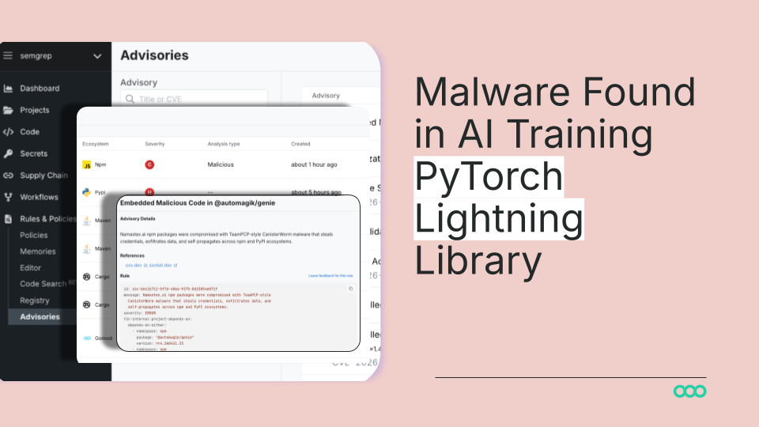

Pin · 企業 AI agent 第一次撞到「太好用反而養不起」這道牆。
Briefs Finance 4 月 17 日刊出 Uber 內部數字。Uber CTO 對員工坦白 公司 2026 全年 AI 預算在 4 月已經燒完。主要支出集中在 Claude Code 與 Cursor 兩條編碼代理線。每位工程師月 API 帳單從 500 美元跳到 2000 美元 沒有 cap。
實際使用面 95% Uber 工程師目前每月在用 AI 工具 70% 已 commit 的程式碼含 AI 生成段落。Claude Code 從 2025 年 12 月鋪開後 使用量 2 月翻倍 4 月直接吃掉全年 AI 預算。對比之下 Cursor 使用曲線在 4 月已經走平 Claude Code 拉開差距。
Uber CTO 公開講出「back to the drawing board」這句話 把整套 AI 預算流程退回起點。對照 Uber 全年 R&D 約 34 億美元 AI coding 工具的單位成本佔比 已經從去年「實驗室科目」升級成預算表上必須單獨列項的科目。
第一 編碼代理的單位經濟學從 SaaS 算法被打回 token 計量算法。過去 GitHub Copilot 那種 19 美元吃到飽價格已經不存在。Claude Code 改走 token 計價 Cursor 跟進。Uber 這個案子等於把「每位工程師月 2000 美元」的真實 ceiling 攤開給整個 enterprise procurement 看 4/28 N°23 那套 GitHub Copilot 改 usage-based 的趨勢 在這一週才被 buyer 端真正吸收。
第二 「per-engineer cap」會變成下一代企業 AI 合約的標配條款。buyer 的議價策略從「我能拿幾折」轉到「我要不要設帳單上限」。Anthropic、OpenAI、Cursor、Cognition 這幾家在下一輪 enterprise term sheet 內 必須明寫 monthly cap、burst window、cap 觸發後的退款邏輯 否則 procurement 不簽。
第三 Claude Code 的領先把 Anthropic 的 enterprise 收入結構壓在編碼這一條腿。對 Anthropic 是好事也是風險：好事是 Uber 等級客戶的單客 ARR 從幾十萬美元跳到千萬等級；風險是當 enterprise 把預算 cap 拉緊 Anthropic 收入 ramp 會直接被 cap 線磨平。1 季前那個 900B+ 估值（5/1 N°29）背後的 IRR 必須靠 cap 突破或 enterprise 願意把 R&D 預算重新切大一塊來支撐。
三個看點：
(1) 下一個季度會出現 enterprise 等級「token rationing」工具市場。誰在公司內部負責分配 Claude Code 額度？Helicone、LangSmith、Portkey 這條觀測層會被推一把成為「token CFO」。下一輪 procurement 軟體會把 LLM 計費 dashboard 列為必選模組。
(2) Anthropic 對 Uber 等級客戶的合約會出現「commit-based discount」這條新曲線。付一年承諾換每 token 2-3 折優惠。AWS 那套 Reserved Instance 的玩法 在 Claude API 上會被原封搬一次。預期下一個 Anthropic enterprise 公告 會在這條軸上出招。
(3) 「Cursor 走平」這個事實會被市場重新讀。Cursor 的 IDE-first 路線 對工程師心智佔有率仍強 但企業帳單面被 Claude Code 的 agent 路線壓住。Cursor 接下來的 product roadmap 必須補上一條 long-running agent 線 否則 enterprise 採購會從「兩家都裝」轉成「一家就好」。
Pin · 從文字模型一路打到「能做家務」的 humanoid 變第二條 frontier 競賽軸。
TechCrunch 5 月 1 日獨家：Meta 已收購人形機器人新創 Assured Robot Intelligence（ARI） 金額未揭露。ARI 整個團隊含兩位共同創辦人加入 Meta 旗下 Superintelligence Labs 研究單位。Meta 發言人對 TC 確認 ARI 在「機器人 frontier」做的是讓機器人理解、預測、適應人類行為。
ARI 兩位共同創辦人來歷重：Xiaolong Wang 之前在 Nvidia 任研究員 並在 UC San Diego 任副教授；Lerrel Pinto 任職 NYU 並共同創辦過兒童尺寸人形機器人公司 Fauna Robotics 該公司上月已被 Amazon 收購。ARI 此前只完成過一輪 seed 由 AI seed fund AIX Ventures 投資。
對 Meta 而言 這條 humanoid 線一年前就在內部 leaked memo 內出現。當時 Yann LeCun 主導的 world model 路線只在學術 paper 與 keynote 階段。今天這筆 deal 把 LeCun 的論述從研究線正式寫進產品線——Superintelligence Labs 接手 ARI 的 robot foundation model 直接接進現有 frontier model stack。
第一 AGI 路線圖第一次被一線實驗室公開承認需要進物理世界。過去兩年 frontier 廠的敘事還停在 token 規模、context window、推理深度這些純文字維度。Meta 這個操作把「模型在物理世界裡學」這條路線從 paper 升級成 M&A 動作 等於在公開層面承認單靠網路語料 frontier 已經逼近收益遞減線。
第二 humanoid M&A 在 1 個月內連續發生兩起。4 月 Amazon 收 Fauna 5 月 Meta 收 ARI 兩件事的共通點是 humanoid foundation model 創辦人 都來自同一個學術圈（NYU、UCSD、Nvidia）。這代表 humanoid 模型側人才池非常窄 大廠搶人會在未來 6 個月迅速把這 30 個人左右的圈子 cap 掉。後進者只能買整支 PhD lab。
第三 Meta Superintelligence Labs 的研究議題正式變成「多模態加身體」。對標 Google DeepMind 的 Gemini Robotics、OpenAI 與 Figure 的合作、Tesla Optimus 與 xAI 的耦合 Meta 的牌位差一條 humanoid 線。這條線補齊後 Meta 在 AGI narrative 戰場上重新有座位 Reality Labs 過去燒的硬體 capex 也找到一個更接近 AGI 的故事框架。
三個看點：
(1) 下一個 humanoid 收購熱點不在硬體公司 而在「robot foundation model」研究團隊。Tesla、Figure、1X、Apptronik 這些硬體做得快的廠商 反而會去買 ARI 這類純研究團隊。資本曲線從硬體 ASP 套利轉到「軟體側模型權重」套利。預期 Q3 內會再有 1-2 起類似規模的 deal 落地。
(2) Meta 對外的下一個 product narrative 會是「家用 humanoid 助理」概念展示。不一定真上市 但類似當年 Llama 一樣 先放出 reference design 與 SDK 拉攏第三方硬體商。對抗 OpenAI Figure 的策略 Meta 必然走 open-stack 路線——把 ARI 的 foundation model 開源是合理的下一步。
(3) world model 路線的論述會從 LeCun 個人主張 升級成 Meta 公司 thesis。下一份 Meta AI 研究報告會把「world model 是 AGI 必要條件」當預設 不再是 LeCun 一個人在頁腳註腳。對抗 OpenAI 的 scaling-only thesis 這條敘事戰會在開發者社群打很久。

Pin · ML 工程師的 dev box 第一次被當作 attacker 橫向跳板鎖定。
Semgrep 與 Socket 兩家安全研究單位 4 月 30 日同時揭露：PyPI 上廣受歡迎的 lightning 套件（PyTorch Lightning 訓練框架）2.6.2 與 2.6.3 兩個版本被植入惡意程式。乾淨版本停留在 1 月 30 日發行的 2.6.1。Socket 的 AI scanner 在 2.6.2 上線 18 分鐘內就標記為可疑 但下載量在那 18 分鐘已經發生。
lightning 在 PyPI 上每日下載數十萬次 月下載破百萬。攻擊路徑藏在 _runtime 目錄裡：start.py 從 GitHub 抓下 Bun JavaScript runtime router_runtime.js 是 11MB 的混淆 payload 在 import lightning 時自動以 daemon thread 在背景執行 完全無感。
Payload 動作清楚：偷 token、auth material、私有 repo 內容、env 變數、雲端密鑰；接著用 stolen GitHub token 把編碼後的資料 commit 進受害者 GitHub 帳號內某些 repo；同時掃 dev box 上的 npm 套件 嘗試把惡意碼塞進開發者自己發布的 npm tarball。Semgrep 與 Socket 都把這次行動歸到 Shai-Hulud 攻擊家族——同一批 obfuscation 模式、同一組 token 偷竊正則、同一套 GitHub repo 投毒手法。
第一 AI 訓練 supply chain 第一次被當作正面戰場。過去 Shai-Hulud 主要打 npm（前端工具鏈）這次直接落在 PyPI 並挑了 ML 工程師標配套件。攻擊者很清楚：ML dev box 上同時存在 model weights、HF token、AWS key、wandb token、私有資料集——一台機器拿下來 報酬是 npm 攻擊的數倍。
第二 「import 即執行」這條長期被忽略的攻擊面 終於進入主流安全議程。Python 的 import 機制讓套件 install 不需執行 但 import 那一刻就跑任意程式碼。lightning 這次正是利用這條：受害者只要在 Jupyter 裡 import lightning as L 整套 payload 立即啟動。pip install 看不到、requirements.txt scan 看不到 必須是 runtime hook 才抓得到。
第三 大廠 ML stack 的「open-source default」假設 必須重新審查。OpenAI、Anthropic、Meta、Google 的內部訓練機器都在用 PyTorch Lightning 這類社群套件。下一個季度 frontier lab 內部 procurement 會被迫加上「pinned hash + signature verify + sandboxed import」三道閘——這套基礎設施過去只在 SRE 團隊內被嚴肅討論 ML 工程組是第一次真正吃到。
三個看點：
(1) HuggingFace、Anaconda、PyPI 三條 ML 套件流通管線會被同時加封。HF 已有 model card 簽章 PyPI 端的 sigstore 簽章採用率會在這次事件後從個位數百分比跳上來。Anaconda 對 enterprise 客群會推出「verified-only」channel 變成新付費 SKU。
(2) Socket、Semgrep、Snyk 等 supply chain 安全廠的 ML 偵測 SKU 會獨立成線。過去這些廠商靠 npm 攻擊事件成長 這次 lightning 案會把產品線拓寬到 ML pipeline——pre-import scan、weight-file taint、wandb token 檢測 變成新的 enterprise 上架功能。
(3) ML 工程師的 dev workflow 會被迫向 SRE 看齊。devcontainer、ephemeral compute、token rotation 這些原本後端工程師才用的習慣 會在 ML 團隊內被要求成標配。短期內 開發效率會掉 中期看 模型訓練的安全邊界第一次被建起來。
— 編輯台 · 等 Rick 審完 Status 切 ready · publish skill 接手 07:00 上線 —